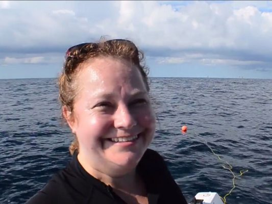

- This event has passed.
LSU Science Café: Ancient Underwater Forest
Dive in with LSU Department of Geography & Anthropology Associate Professor Kristine DeLong as she shares her research on an underwater cypress forest discovered off the coast of Alabama.
She excavated the underwater forest and analyzed samples of the wood and ancient pollen to find out how old the forest is. What she found offers a new look into a much colder, windier climate in this region than today.
Date: Tuesday, April 30
Doors Open: 5:00 PM
Talk Begins: 6:00 PM
Location: Varsity Theatre, 3353 Highland Rd.
Cost: FREE
About the Speaker: Kristine DeLong

Dr. DeLong leads the Paleoclimate and Anthropology Studies, or PAST Lab, at LSU. She is an associate professor in the LSU Department of Geography & Anthropology in the College of Humanities & Social Sciences.
People of all ages are welcome. Please spread the word and join us for a fun and informative night! For more info call 225-578-3870.